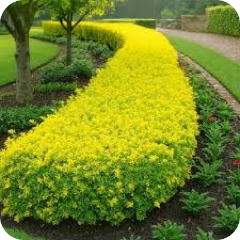
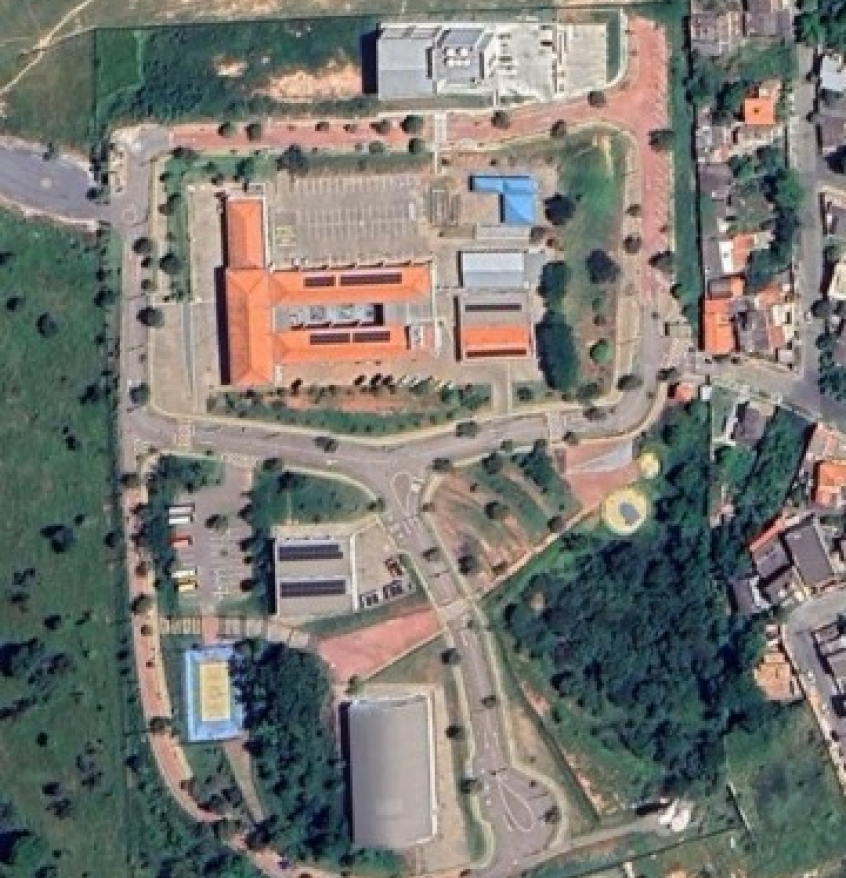

Duranta erecta
NOMES(s) POPULAR(ES)
pingo-de-ouro
GÊNERO
Duranta
FAMÍLIA
Verbenaceae
FLORA
Brasil
Imagens




Características
A Duranta erecta, conhecida popularmente como pingo-de-ouro ou violeteira, é um arbusto ornamental bastante utilizado em jardins e cercas vivas. Ela pode atingir entre 2 e 6 metros de altura, dependendo da poda, e possui crescimento rápido.
Suas folhas são pequenas, de coloração verde-clara a dourada (no caso da variedade “pingo-de-ouro”), e têm formato oval. A planta também produz flores delicadas, geralmente em tons de roxo ou azul, que aparecem em cachos e são bastante atrativas para polinizadores como abelhas e borboletas.
Outro destaque são seus frutos, pequenas bagas amarelo-alaranjadas, que são decorativas, mas tóxicas se ingeridas. A Duranta erecta prefere clima tropical ou subtropical, com boa exposição ao sol, e se adapta bem a diferentes tipos de solo, desde que tenham boa drenagem.
Por ser resistente e fácil de cuidar, é muito usada para fins paisagísticos, especialmente na formação de cercas vivas e bordaduras.
Localização no
Campus

PRÓXIMO À
Portaria 1
JARDIM
Jardim 1
COORDENADA
19°45'34.1"S 44°05'23.7"W